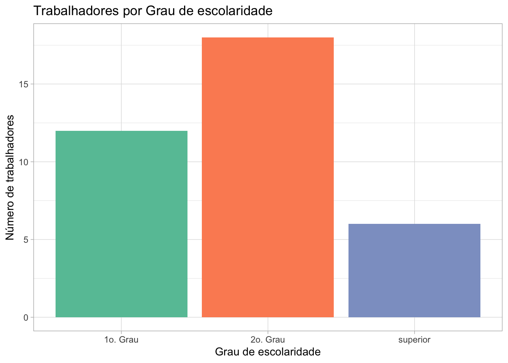

Lista Prática 1
Análise de Dados aplicados a Psicobiologia
Instruções
A tabela lista de exercícios.sta apresenta os dados de 36 trabalhadores de uma empresa.
Código
# Carregando os dados
# Renomeei os dados para: dados.sav
dados <- haven::read_sav("dados.sav") Observações:
1- Verifique a normalidade das variáveis antes de escolher o teste. Justifique a escolha de cada um dos testes que você for utilizar.
2- Não se esqueça de dizer quais são as variáveis dependentes e independentes para cada teste.
Pacote infer
Em alguns exercícios, usei o infer, para treinar. Ele faz parte do pacote tidymodels.
Referências:
Funções auxiliares
Criei essa função para calcular o intervalo de confiança de médias.
Porém foi para treinar. Deve haver funções já implementadas e mais robustas!
Código
intervalo_de_confianca_media <- function(media, desvio_padrao, tamanho_amostra, confianca = 95){
if(confianca == 99){
z <- 2.58
} else if(confianca == 95){
z <- 1.96
} else if(confianca == 90){
z <- 1.65
} else {
usethis::ui_stop("Escolha dentre os seguintes níveis de confiança: 90%, 95% ou 99%.")
}
erro_padrao_calc <- desvio_padrao / sqrt(tamanho_amostra)
valor_intervalo <- erro_padrao_calc * z
c(ic_min = media - valor_intervalo, ic_max = media + valor_intervalo)
}Exercícios de estatística descritiva
Exercício 1
Descreva cada uma das variáveis presentes no banco de dados. Qual o nível de mensuração de cada uma delas?
A tabela apresenta os dados de 36 trabalhadores de uma empresa.
Um pouco sobre a base dos dados:
Código
glimpse(dados)Rows: 36
Columns: 8
$ ESTADO_C <chr> "Solteiro", "Casado", "Casado", "Solteiro", "Solteiro", "Casa…
$ GRAU_DE <chr> "1o. Grau", "1o. Grau", "1o. Grau", "2o. Grau", "1o. Grau", "…
$ N_MERO_D <dbl> 0, 1, 2, 0, 0, 0, 0, 0, 1, 0, 2, 0, 0, 3, 0, 0, 1, 2, 0, 0, 1…
$ SAL_RIO <dbl> 4.00, 4.56, 5.25, 5.73, 6.26, 6.66, 6.86, 7.39, 7.59, 7.44, 8…
$ IDADE <dbl> 26, 32, 36, 20, 40, 28, 41, 43, 34, 23, 33, 27, 37, 44, 30, 3…
$ ORIGEM <chr> "interior", "capital", "capital", "outro", "outro", "interior…
$ SAL_RIO1 <dbl> 4.56, 5.25, 5.73, 6.26, 6.66, 6.86, 7.39, 9.35, 9.77, 9.80, 1…
$ SAL_RIO2 <dbl> 6.86, 7.39, 7.59, 7.44, 8.12, 4.00, 6.66, 6.86, 7.39, 7.59, 7…“ESTADO_C” - Variável que representa o estado civil da pessoa. Neste caso, as categorias presentes são: Casado, Solteiro. É uma variável qualitativa categórica nominal (apresenta categorias, mas sem uma ordem definida).
“GRAU_DE” - Variável que representa o grau de instrução da pessoa. Apresenta as seguintes categorias: 1o. Grau, 2o. Grau e Superior. É uma variável qualitativa categórica ordinal (apresenta categorias, e essas categorias apresentam uma ordem: as pessoas primeiramente cursam o primeiro grau, depois o segundo grau, e depois o ensino superior).
“N_MERO_D” - Variável que representa uma contagem, que varia entre 0 e 5, portanto é uma variável quantitativa discreta. Apesar do nome não deixar claro o que a variável representa, caso fosse necessário realizar um “chute”, seria que a variável representa o número de filhos que essa pessoa tem (existe apenas 1 pessoa com 5 filhos e essa pessoa tem 40 anos, o mais comum é não ter filhos, etc.).
“SAL_RIO” - Variável quantitativa contínua, que representa o salário da pessoa. Os valores estão entre 4.0 e 23.3. Provavelmente é o valor do salário por hora.
“IDADE” - Variável que representa a idade da pessoa, apresentando idades entre 20 e 48 anos. É uma variável quantitativa discreta, pois apenas apresenta números inteiros.
“ORIGEM” - Variável qualitativa categórica nominal que apresenta a região de origem da pessoa, baseada nas seguintes categorias: capital, interior, outros.
“SAL_RIO1” - Variável quantitativa contínua que apresenta o valor do salário, mas como já existe uma variável “SAL_RIO”, não ficou claro para mim sobre qual salário se refere. Os valores apresentados estão entre 2.5 e 23.3. O exercício 8 aponta que essas variáveis sobre salário se referem ao salário em 3 anos seguidos: SAL_RIO (06), SAL_RIO1 (07) e SAL_RIO2 (08).
“SAL_RIO2” - Variável quantitativa contínua que apresenta o valor do salário, mas como já existe uma variável “SAL_RIO”, não ficou claro para mim sobre qual salário se refere. Os valores apresentados estão entre 2 e 44. O exercício 8 aponta que essas variáveis sobre salário se referem ao salário em 3 anos seguidos: SAL_RIO (06), SAL_RIO1 (07) e SAL_RIO2 (08).
Exercício 2
Construa tabelas de freqüências para os dados referentes ao grau de instrução, estado civil e região de origem.
Estado Civil
Código
criar_tabela_frequencia(dados, "ESTADO_C") | Categoria | Frequência Absoluta | Frequência Relativa |
|---|---|---|
| Casado | 20 | 56% |
| Solteiro | 16 | 44% |
Grau de escolaridade
Código
criar_tabela_frequencia(dados, "GRAU_DE") | Categoria | Frequência Absoluta | Frequência Relativa |
|---|---|---|
| 1o. Grau | 12 | 33% |
| 2o. Grau | 18 | 50% |
| superior | 6 | 17% |
Região de origem
Código
criar_tabela_frequencia(dados, "ORIGEM") | Categoria | Frequência Absoluta | Frequência Relativa |
|---|---|---|
| capital | 11 | 30.6% |
| interior | 12 | 33.3% |
| outro | 13 | 36.1% |
Exercício 3
Represente graficamente estas tabelas (utilizando pelo menos 2 tipos diferentes de gráficos)
Estado Civil
Código
dados |>
rename(VAR = ESTADO_C) |>
count(VAR) |>
mutate(
VAR_PORC = (n / sum(n)),
VAR_PORC_100 = scales::percent(VAR_PORC),
VAR_TEXTO = paste0(stringr::str_to_title(VAR), " - ", VAR_PORC_100)
) |>
ggplot() +
geom_bar(aes(x = "", y = VAR_PORC, fill = VAR_TEXTO),
stat = "identity",
width = 1) +
coord_polar(theta = "y") +
theme_void() +
scale_fill_brewer(palette = "Set2") +
labs(title = "Trabalhadores por Estado Civil",
fill = "Estado Civil")Grau de escolaridade
Código
dados |>
ggplot() +
aes(x = GRAU_DE, fill = GRAU_DE) +
geom_bar(show.legend = FALSE) +
scale_fill_brewer(palette = "Set2") +
theme_light() +
labs(
title = "Trabalhadores por Grau de escolaridade",
x = "Grau de escolaridade",
y = "Número de trabalhadores"
)
Região de origem
Código
dados |>
ggplot() +
aes(x = ORIGEM, fill = ORIGEM) +
geom_bar(show.legend = FALSE) +
scale_fill_brewer(palette = "Set2") +
theme_light() +
labs(
title = "Trabalhadores por região de origem",
x = "Região de origem",
y = "Número de trabalhadores"
)Exercício 5
Calcule o salário médio e a idade média dos solteiros e dos casados.
Idade média por estado Civil
Código
| Estado civil | Idade média |
|---|---|
| Casado | 35 |
| Solteiro | 34 |
Idade média:
Solteiros: aproximadamente 34 anos (33,9)
Casados: aproximadamente 35 anos (35,2)
Salário médio por estado civil
Aqui fiquei com dúvida sobre o que era esperado, pois existem 3 colunas que apresentam dados de salário (ver exercício 8).
Primeiro calculei a média do salário geral (considerando os 3 anos):
Código
media_salario_geral <- dados |>
select(ESTADO_C, SAL_RIO, SAL_RIO1, SAL_RIO2) |>
pivot_longer(cols = starts_with("SAL"),
names_to = "variavel",
values_to = "salario") |>
group_by(ESTADO_C) |>
summarise(media_geral_salario = round(mean(salario), 1))Depois calculei a média dos salários considerando o ano:
E uni as duas tabelas:
| ESTADO_C | media_geral_salario | media_salario_ano_06 | media_salario_ano_07 | media_salario_ano_08 |
|---|---|---|---|---|
| Casado | 11.8 | 12.1 | 9.5 | 13.7 |
| Solteiro | 9.7 | 9.9 | 10.7 | 8.4 |
Essas variáveis vão ser abordadas posteriormente, no exercício 8.
Salário médio - considerando os 3 anos:
Solteiros: 9,7
Casados: 11,8
Exercícios com testes estatísticos
Exercício 4
Compare, estatisticamente (α=5%), se há diferenças na distribuição de número de filhos e na idade média em função das regiões de origem dos trabalhadores.
Número de filhos em função da região de origem
Variável independente: Região de origem - Categórica
Variável dependente: Número de filhos - Numérica
Testando a normalidade com o teste de Shapiro-Wilk:
Código
shapiro.test(dados$N_MERO_D) |>
broom::tidy() |>
mutate(normalidade = p.value > 0.05) |>
knitr::kable()| statistic | p.value | method | normalidade |
|---|---|---|---|
| 0.7487881 | 1.8e-06 | Shapiro-Wilk normality test | FALSE |
A quantidade de filhos não segue a distribuição normal.
FAZER!
Código
dados |>
group_by(ORIGEM) |>
count(N_MERO_D) |>
ggplot(aes(x = N_MERO_D, y = n, fill = ORIGEM)) +
geom_col() +
facet_wrap(~ORIGEM, ncol = 1) +
theme_minimal()Idade média em função da região de origem
Variável independente: Região de origem - Categórica
Variável dependente: Idade - Numérica
Testando a normalidade com o teste de Shapiro-Wilk:
Código
shapiro.test(dados$IDADE) |>
broom::tidy() |>
knitr::kable()| statistic | p.value | method |
|---|---|---|
| 0.9910388 | 0.9903279 | Shapiro-Wilk normality test |
A hipótese nula deste teste é que os dados tem distribuição normal. Nesse caso, queremos que o valor-p seja maior que 95%. Com o resultado encontrado (p-valor = 0.99) podemos assumir a normalidade.
Agora para o teste estatístico: nesse caso a variável independente é a ORIGEM (com 3 categorias), e a variável dependente é a idade.
Vamos calcular o intervalo de confiança para as idades em cada grupo:
Código
ic_calculado_idade_origem <- dados |>
dplyr::group_by(ORIGEM) |>
summarise(
media_idade = mean(IDADE),
sd_idade = sd(IDADE),
n = dplyr::n()
) |>
dplyr::rowwise() |>
mutate(
ic = list(intervalo_de_confianca_media(media = media_idade,
desvio_padrao = sd_idade,
tamanho_amostra = n))
) |>
tidyr::unnest_wider(col = ic)
ic_calculado_idade_origem |>
knitr::kable()| ORIGEM | media_idade | sd_idade | n | ic_min | ic_max |
|---|---|---|---|---|---|
| capital | 36.00000 | 6.180615 | 11 | 32.34749 | 39.65251 |
| interior | 33.25000 | 5.894913 | 12 | 29.91464 | 36.58536 |
| outro | 34.61538 | 8.067822 | 13 | 30.22967 | 39.00110 |
Código
ic_calculado_idade_origem |>
ggplot() +
aes(x = ORIGEM, y = media_idade) +
geom_point() +
geom_errorbar(aes(ymin = ic_min, ymax = ic_max), width = 0.5) +
theme_light()
Interpretando o gráfico, não há evidências para afirmar que as médias das idades são diferentes entre os grupos.
Fazendo a ANOVA, para fins de ter mais evidências sobre a resposta:
Código
valor_f <- dados |>
specify(response = IDADE, explanatory = ORIGEM) |>
hypothesise(null = "independence") |>
calculate(stat = "F")Código
# Graus de liberdade entre os grupos (df1) = k - 1
# Graus de liberdade dentro dos grupos (df2) = N - k
#
# Onde:
#
# k é o número de grupos ou tratamentos.
# N é o número total de observações.
p_valor_teste_f <- pf(valor_f$stat, lower.tail = TRUE, df1 = 3 - 1, df2 = 36 - 3)
p_valor_teste_f[1] 0.3669772Não rejeito a hipótese nula.
Exercício 6
Verifique a associação entre estado civil e grau de instrução. É possível dizer que existe associação significante entre estado civil e grau de instrução (α=5%)?
Primeiro, visualizando os dados: não tem nada que me chame muita atenção. Vamos seguindo.
Código
dados |>
ggplot() +
aes(fill = ESTADO_C, x = GRAU_DE) +
geom_bar(position = "fill") +
scale_fill_brewer(palette = "Set2") +
theme_light() +
labs(
x = "Grau de escolaridade",
fill = "Estado Civil",
y = "Proporção"
)Temos 2 variáveis categóricas. Para verificar associação, precisamos usar o teste Qui-quadrado.
Nesse caso, não existe variável dependente e independente.
Pressupostos do Qui-quadrado
Verificando se não tem nenhuma casela com 0 elementos:
| GRAU_DE | Casado | Solteiro |
|---|---|---|
| 1o. Grau | 5 | 7 |
| 2o. Grau | 12 | 6 |
| superior | 3 | 3 |
Verificando se temos pelo menos 4 elementos por casela: Nesse caso, não! Tem duas caselas com 3 indivíduos. Nesse caso, podemos usar o teste exato de fisher.
Vou testar com os dois e ver se o resultado é diferente.
Chi-quadrado
Código
resultado <- chisq_test(dados, formula = ESTADO_C ~ GRAU_DE)
resultado |> knitr::kable()| statistic | chisq_df | p_value |
|---|---|---|
| 1.9125 | 2 | 0.3843314 |
O valor-p é maior que 5%, portanto não é significativo. Não encontramos associação entre estado civil e grau de escolaridade.
Teste exato de Fisher
Pelo que entendi, esse teste é mais “conservador” que o Qui-quadrado. Portanto, se no Qui-quadrado deu “não significativo”, acredito que aqui a resposta será igual.
Código
# preparando a tabela para o teste
dados_ec_ge <- janitor::tabyl(dados, GRAU_DE, ESTADO_C) |>
tibble::column_to_rownames("GRAU_DE")
# Executando o teste
fisher.test(dados_ec_ge) |>
broom::tidy() |>
knitr::kable()| p.value | method | alternative |
|---|---|---|
| 0.4043946 | Fisher’s Exact Test for Count Data | two.sided |
Neste caso, o valor-p também foi maior que 5%. Não encontramos associação entre estado civil e grau de escolaridade.
Exercício 7
Segundo dados do IBGE, a média da idade da população de SP é de 31 anos. A amostra apresentada possui diferença significativa na média da idade em relação à estimativa média populacional?
Nesse caso, podemos fazer o intervalo de confiança para a média de idade dos trabalhadores, e comparar com a média de idade da população de SP.
Dados do IBGE - Entendo que quer dizer que são os dados do Censo. Portanto o que temos é a média da população (um parâmetro).
Hipótese nula: média da idade dos trabalhadores é IGUAL à média da idade da população de SP.
Hipótese alternativa: média da idade dos trabalhadores é DIFERENTE à média da idade da população de SP.
Normalidade
O histograma dos dados de idade me dá pistas de que considerar a distribuição como normal é uma aproximação aceitável.
Código
dados |>
ggplot() +
aes(x = IDADE) +
geom_histogram(binwidth = 5, color = "black", fill = "lightblue") +
theme_light() +
labs(
title = "Distribuição da idade dos trabalhadores",
x = "Idade",
y = "Número de trabalhadores"
)
Intervalo de confiança
Precisamos calcular o intervalo de confiança. Fiz primeiro à mão, e depois em R.
Código
# Quandas pessoas temos na base?
quantidade_pessoas <- nrow(dados)
# Qual é a média da idade?
media_idade <- mean(dados$IDADE)
# Qual é o desvio padrão da idade?
sd_idade <- sd(dados$IDADE)
ic_idade <- intervalo_de_confianca_media(media = media_idade,
desvio_padrao = sd_idade,
tamanho_amostra = quantidade_pessoas)
ic_idade ic_min ic_max
32.38244 36.78422 Ao comparar o intervalo de confiança e a média de idade da população de São Paulo, percebemos que a diferença é significativa, pois a média da idade da população de São Paulo (31 anos) está fora do intervalo de confiança para a média da idade dos trabalhadores (arredondando, aprox entre 32 e 37 anos).
Código
tibble(
grupo = c("Trabalhadores", "População de SP"),
idade_media = c(media_idade, 31)
) |>
ggplot() +
aes(x = grupo, y = idade_media) +
geom_errorbar(aes(x = "Trabalhadores", ymin = ic_idade[1], ymax = ic_idade[2]), width = 0.2) +
geom_point() +
theme_light() +
scale_y_continuous(limits = c(30, 40)) Outra opção: comparar com valor de referência
FAZER!
Exercício 8
O salário desta amostra foi medido em três anos seguidos (06,07 e 08). Houve diferença entre o salário ao longo do tempo? (α=5%).
Primeiro, podemos deixar os dados no formato “longo” para facilitar a visualização.
Código
salario_tempo <- dados |>
tibble::rowid_to_column(var = "id_pessoa") |>
select(id_pessoa,
salario_06 = SAL_RIO,
salario_07 = SAL_RIO1,
salario_08 = SAL_RIO2) |>
pivot_longer(cols = c("salario_06", "salario_07", "salario_08"),
names_to = "ano_salario", values_to = "valor_salario")Visualizando a distribuição do salário nos 3 momentos: não parece ter grandes diferenças. Só no ano 08 tem alguém recebendo mais que os outros.
Código
salario_tempo |>
ggplot() +
aes(x = valor_salario) +
geom_histogram(binwidth = 5, color = "black", fill = "lightblue") +
facet_wrap(~ano_salario, ncol = 1) +
theme_light()Testando normalidade
Podemos também testar a normalidade com o teste de Shapiro-Wilk:
Código
| ano_salario | statistic | p.value | method | normalidade |
|---|---|---|---|---|
| salario_06 | 0.9619393 | 0.2465504 | Shapiro-Wilk normality test | TRUE |
| salario_07 | 0.9305990 | 0.0260982 | Shapiro-Wilk normality test | FALSE |
| salario_08 | 0.7378603 | 0.0000012 | Shapiro-Wilk normality test | FALSE |
Apenas o salário do ano 06 apresenta uma distribuição que podemos considerar normal.
Então usar testes baseados na média não é uma boa idéia!
Pensar em qual teste fazer. Temos o salário (variável contínua) ao longo do tempo. Nesse caso, entendo o tempo como a variável independente, e o salário como variável dependente.
Análise de variância? Ainda não vimos em aula!
Intervalo de confiança
Código
ic_calculado_salario <- salario_tempo |>
dplyr::group_by(ano_salario) |>
summarise(
media_salario = mean(valor_salario),
sd_salario = sd(valor_salario),
n = dplyr::n()
) |>
dplyr::rowwise() |>
mutate(
ic = list(intervalo_de_confianca_media(media = media_salario,
desvio_padrao = sd_salario,
tamanho_amostra = n))
) |>
tidyr::unnest_wider(col = ic)
ic_calculado_salario |>
knitr::kable()| ano_salario | media_salario | sd_salario | n | ic_min | ic_max |
|---|---|---|---|---|---|
| salario_06 | 11.12222 | 4.587458 | 36 | 9.623653 | 12.62079 |
| salario_07 | 10.04194 | 5.009863 | 36 | 8.405389 | 11.67850 |
| salario_08 | 11.35333 | 7.307821 | 36 | 8.966112 | 13.74055 |
Código
ic_calculado_salario |>
ggplot() +
aes(x = ano_salario, y = media_salario) +
geom_point() +
geom_errorbar(aes(ymin = ic_min, ymax = ic_max), width = 0.5) +
theme_light()Não há evidências para afirmar que as médias são diferentes.
Exercícios de análise de outlier
Exercício 9
Observe à variável “Número de filhos”. Calcule o escore z para cada uma dos participantes da amostra. Quais participantes podem ser considerados outliers para a amostra número de filhos?
A lógica do z-score é pensar: quantos desvios padrão de distância um valor encontrado está da média?
Um valor absoluto de escore z igual ou maior que 3 indicaria que um valor pode ser considerado um outlier.
Código
dados_z_score <- dados |>
rowid_to_column() |>
rename(numero_filhos = N_MERO_D) |>
dplyr::mutate(
media_numero_filhos = mean(numero_filhos),
sd_numero_filhos = sd(numero_filhos),
z_score_numero_filhos = (numero_filhos - media_numero_filhos) / sd_numero_filhos,
abs_z_score_numero_filhos = abs(z_score_numero_filhos)
)Calculado o escore z, o trabalhador da linha 29 apresenta 5 filhos, e um z_score maior que 3.
Código
| rowid | ESTADO_C | GRAU_DE | numero_filhos | SAL_RIO | IDADE | ORIGEM | SAL_RIO1 | SAL_RIO2 | media_numero_filhos | sd_numero_filhos | z_score_numero_filhos | abs_z_score_numero_filhos |
|---|---|---|---|---|---|---|---|---|---|---|---|---|
| 29 | Casado | 2o. Grau | 5 | 14.71 | 40 | interior | 4.56 | 17.26 | 0.9166667 | 1.250714 | 3.264802 | 3.264802 |
Visualização:
Código
numero_filhos_outlier <- unique(outliers_filhos$numero_filhos)
dados_z_score |>
dplyr::count(numero_filhos) |>
ggplot() +
aes(x = numero_filhos, y = n) +
geom_col(color = "black", fill = "lightblue") +
geom_text(y = 2, x = numero_filhos_outlier, label = "Outlier") +
gghighlight::gghighlight(numero_filhos %in% numero_filhos_outlier) +
scale_x_continuous(breaks = seq(0, max(dados$N_MERO_D))) +
theme_light() +
labs(x = "Número de filhos",
y = "Frequência",
title = "Quantidade de filhos por trabalhador",
subtitle = "Existe algum outlier?")